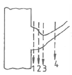
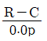
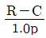
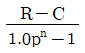
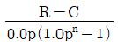
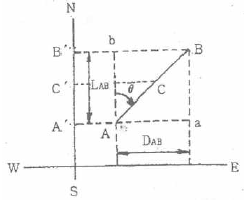
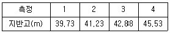
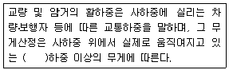
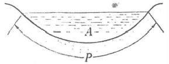
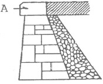

산림기사 (2018-03-04 기출문제)
1과목: 조림학
1. 삽목상의 조건으로 가장 적합한 것은?
- 건조를 막기 위해 해가림이 필요하다.
- 온도가 30℃ 이상 높은 온도에서 발근이 유리하다.
- 토양 내 미생물의 종류가 다양할수록 발근에 유리하다.
- 발근에 시간이 오래 걸리는 수종의 경우 잎의 증산이 원활하도록 공중습도를 조절한다.
(정답률: 77%)

2. 토양산성화로 인한 수목 생육 장애요인으로 옳지 않은 것은?
- 인산 이용의 결핍
- 염기성 양이온의 용탈
- 뿌리의 양분 흡수력 저하
- 토양 미생물과 소동물의 활성 증가
(정답률: 85%)
3. 어린나무 가꾸기의 대상 임목은?
- 폭목
- 중용목
- 경합목
- 피해목
(정답률: 76%)
4. 개화한 당년에 종자가 성숙하는 수종과 개화한 다음해에 종자가 성숙하는 수종이 바르게 짝지어진 것은?
- 졸참나무 - 떡갈나무
- 신갈나무 - 갈참나무
- 신갈나무 - 상수리나무
- 굴참나무 - 상수리나무
(정답률: 74%)
5. 묘포의 경운작업에 대한 설명으로 옳지 않은 것은?
- 호기성 토양 미생물이 증식할 수 있는 환경을 제공한다.
- 토양의 풍화작용을 억제하여 영양분을 가용성으로 만든다.
- 토양의 보수력 및 흡열력, 그리고 비료의 흡수력을 증가시킨다.
- 토양을 부드럽게 하고 통기가 잘 되도록 하여 토양 산소량을 많게 한다.
(정답률: 85%)
6. 수목의 체내에서 양료의 이동성이 떨어지는 무기원소는?
- 인
- 질소
- 칼슘
- 마그네슘
(정답률: 77%)
7. 우량 묘목의 조건으로 가장 부적합한 것은?
- 우량한 유전성을 지닌 것
- 근계의 발달이 충실한 것
- 가지가 사방으로 고루 뻗어 발달한 것
- 정아보다 측아의 발달이 잘 되어 있는 것
(정답률: 84%)
8. 속씨식물에 대한 설명으로 옳지 않은 것은?
- 중복수정을 하지 않는다.
- 배유의 염색체는 3배체(3n)이다.
- 완전화의 경우 배주가 심피에 싸여 있다.
- 건조지에서 자라는 수목의 잎은 책상조직이 양쪽에 있어서 앞뒤의 구별이 불분명하다.
(정답률: 68%)
9. 동령적 혼효림 조성 시 고려해야 할 사항으로 옳지 않은 것은?
- 가급적 양수와 음수를 모두 식재한다.
- 생장속도가 비슷한 수종으로 식재한다.
- 각 수종이 비슷한 윤벌기 내에 성숙하도록 한다.
- 내음성이 비슷한 수종의 경우 생장속도가 빠른 수종은 일찍 식재한다.
(정답률: 83%)
10. 포플러류 중 양버들에 해당하는 것은?
- Populus alba
- Populus nigra
- Populus davidiana
- Populus tomentiglandulosa
(정답률: 67%)
11. 간벌에 대한 설명으로 옳은 것은?
- 임목의 형질을 퇴화시키는 단점이 있다.
- 정량간벌은 간벌목 선정이 수형급을 중심으로 이루어진다.
- 간벌을 하지 않은 임분은 입지 조건이 열악해지는 단점이 있다.
- 직경 생장을 촉진시켜 연륜폭을 고르게 하는데 도움을 줄 수 있다.
(정답률: 79%)
12. 종자의 휴면타파 방법이 아닌 것은?
- 후숙
- 노천매장
- 침수처리
- 밀봉저장
(정답률: 74%)
13. 수분의 주요 이동통로로 이용되는 조직은?
- 수
- 사부
- 목부
- 형성층
(정답률: 76%)
14. 우리나라 온대 중부지방을 대표하는 특징 수종은?
- 신갈나무
- 분비나무
- 후박나무
- 너도밤나무
(정답률: 60%)
15. 자연생태계의 물순환 과정에서 산림의 역할에 대한 설명으로 옳지 않은 것은?
- 산림토양의 특성은 지표의 우수유출경로를 결정하며 홍수에 큰 영향을 끼친다.
- 물은 광합성에 의해 물질생산에 기여하고, 생산된 물질순환 과정에서 산림토양이 형성된다.
- 증산작용에 의한 지표면의 열환경 변화는 도시림에서는 거의 무시할 수 있을 정도로 미미하다.
- 산림의 대규모 소실은 지표의 열환경 변화와 대량의 증산량 감소로 인해 광역의 물순환을 변화시킨다.
(정답률: 83%)
16. 열대우림에 대한 설명으로 옳지 않은 것은?
- 종다양성이 높다.
- 목의 뿌리는 대부분 심근성이다.
- 과도한 침식과 용탈로 토양이 척박해지기 쉽다.
- 연평균 강우량이 2,000mm 이상의 적도 주변 지역에 분포한다.
(정답률: 74%)
17. 단벌기 작업에서 맹아에 의한 갱신 방법은?
- 왜림작업
- 중림작업
- 이단림작업
- 모수림작업
(정답률: 81%)
18. 종자의 결실주기가 가장 짧은 수종은?
- Alnus japonica
- Picea jezoensis
- Larix kaempferi
- Abies holophylla
(정답률: 63%)
19. 활엽수의 가지치기 절단 위치로 가장 적합한 곳은?

- 1
- 2
- 3
- 4
(정답률: 85%)
20. 산벌작업에 적용이 가장 적합한 수종은?
- 곰솔, 소나무
- 전나무, 너도밤나무
- 사시나무, 자작나무
- 리기다소나무, 일본잎갈나무
(정답률: 48%)
2과목: 산림보호학
21. 솔잎혹파리에 대한 설명으로 옳은 것은?
- 1년에 1회 발생하며 알로 충영 속에서 월동한다.
- 1년에 2회 발생하며 성충으로 충영 속에서 월동한다.
- 1년에 2회 발생하며 지피물 속에서 성충으로 월동한다.
- 1년에 1회 발생하며 유충으로 땅 속 또는 충영 속에서 월동한다.
(정답률: 77%)
22. 오염원으로부터 직접 배출되는 1차 대기오염 물질이 아닌 것은?
- 분진
- 오존
- 황산화물
- 질소산화물
(정답률: 82%)
23. 다음의 하늘소 유충 중 톱밥 또는 배설물을 나무 밖으로 배출하지 않아 발견하기 어려운 것은?
- 알락하늘소
- 뽕나무하늘소
- 향나무하늘소
- 솔수염하늘소
(정답률: 69%)
24. 불리한 환경에 따른 곤충의 활동정지와 휴면에 대한 설명으로 옳은 것은?
- 미국흰불나방은 의무적 휴면을 한다.
- 활동정지는 환경조건이 개선되면 곧 종료된다.
- 1년에 한 세대만 발생하는 곤충은 기회적 휴면을 한다.
- 일장(日長)은 휴면으로의 진입여부 결정에 중요한 요소는 아니다.
(정답률: 82%)
25. 밤나무 줄기마름병의 방제 효과가 가장 미비한 것은?
- 살균제를 살포한다.
- 박쥐나방을 방제한다.
- 질소 비료를 적게 준다.
- 토양배수가 잘되는 곳에 묘목을 심는다.
(정답률: 44%)
26. 남서방향에서 고립되어 생육하고 있는 임목, 코르크층이 발달되지 않은 수종에서 많이 나타나는 기상 피해는?
- 한해
- 풍해
- 설해
- 피소
(정답률: 81%)
27. 수목병 발생과 환경조건과의 관계에서 수목이 가장 심한 피해를 입을 수 있는 경우는?
- 환경조건이 병원체나 기주에 모두 적합한 경우
- 환경조건이 병원체나 기주에 모두 부적합한 경우
- 환경조건이 병원체에 적합하고 기주에 부적합한 경우
- 환경조건이 병원체에 부적합하고 기주에 적합한 경우
(정답률: 78%)
28. 코흐(Koch)의 원칙을 충족시키지 않는 조건은?
- 병원체의 순수 배양이 불가능해야 한다.
- 기주로부터 병원체를 분리할 수 있어야 한다.
- 기주에서 병원체로 의심되는 특정 미생물이 존재해야 한다.
- 동일 기주에 병원체를 접종하면 동일한 병이 발생되어야 한다.
(정답률: 78%)
29. 약제를 식물체의 뿌리, 줄기, 잎 등에서 흡수시켜 식물체 전체에 약제가 분포되게 하고, 해충이 섭식하였을 경우에 약효가 발휘되는 살충제의 종류는?
- 침투성 살충제
- 접촉성 살충제
- 유인성 살충제
- 소화중독성 살충제
(정답률: 63%)
30. 모잘록병의 방제법으로 효과가 가장 미비한 것은?
- 토양소독
- 종자소독
- 묘상의 환경개선
- 옥시테트라사이클린 살포
(정답률: 74%)
31. 세균으로 인한 수목병은?
- 소나무 혹병
- 벚나무 불마름병
- 밤나무 줄기마름병
- 벚나무 갈색무늬구멍병
(정답률: 55%)
32. 토양 내에서 월동하는 병원체는?
- 잣나무 털녹병균
- 참나무 시들음병균
- 자줏빛날개무늬병균
- 밤나무 줄기마름병균
(정답률: 62%)
33. 오리나무잎벌레의 월동 형태와 장소는?
- 알로 지피물 밑에서
- 성충으로 땅 속에서
- 번데기로 수피 사이에서
- 유충으로 나뭇잎 아래에서
(정답률: 62%)
34. 솔껍질깍지벌레에 대한 설명으로 옳지 않은 것은?
- 주로 인공식재된 잣나무림에서 큰 피해를 준다.
- 약충이 가지와 줄기의 수피에 주둥이를 꽂고 수액을 빨아먹는다.
- 수피 틈이나 가지 사이에 알주머니를 분비하고 그 속에 알을 낳는다.
- 암컷 성충은 후약충에서 번데기 시기를 거치지 않고 바로 성충이 된다.
(정답률: 45%)
35. 수목병의 임업적 방제법으로 옳지 않은 것은?
- 임지에 생육하기 적합한 나무를 조림한다.
- 종자 산지에 가까운 곳에 임지를 조성한다.
- 병해가 발생한 지역에서는 지존작업을 한다.
- 방제 관리의 효율성을 고려하여 단순림을 조성한다.
(정답률: 75%)
36. 수목에 기생하는 식물로 낙엽성인 것은?
- 겨우살이
- 꼬리 겨우살이
- 참나무 겨우살이
- 동백나무 겨우살이
(정답률: 60%)
37. 호두나무잎벌레에 대한 설명으로 옳은 것은?
- 1년에 1회 발생되며, 알로 월동한다.
- 1년에 1회 발생되며, 성충으로 월동한다.
- 1년에 2회 발생되며, 번데기로 월동한다.
- 1년에 2회 발생되며, 유충으로 월동한다.
(정답률: 71%)
38. 수목의 잎을 가해하는 해충이 아닌 것은?
- 대벌레
- 솔나방
- 솔알락명나방
- 참나무재주나방
(정답률: 73%)
39. 오리나무 갈색무늬병의 방제법으로 옳지 않은 것은?
- 연작을 실시한다.
- 종자소독을 한다.
- 병든 낙엽을 태운다.
- 밀식 시에는 솎아주기를 한다.
(정답률: 72%)
40. 미국흰불나방에 대한 설명으로 옳지 않은 것은?
- 1년에 2～3회 발생한다.
- 지피물 밑에서 번데기로 월동한다.
- 1화기가 2화기보다 피해가 더 심하다.
- 핵다각체병바이러스를 이용하여 방제한다.
(정답률: 71%)
3과목: 임업경영학
41. 임지기망가를 적용하는데 있어 이론과 현실이 달라 발생하는 문제점으로 옳지 않은 것은?
- 플러스(＋) 값만 발생되어 현실과 맞지 않는다.
- 수익과 비용인자는 평가시점에 따라 수시로 변동한다.
- 동일한 작업을 영구히 계속하는 것은 비현실적이다.
- 임업이율을 정하는 객관적인 근거가 없어 평정이 자의적으로 되기 쉽다.
(정답률: 76%)
42. 어느 임업 법인체의 임목벌채권 취득원가가 8000만원이고, 잔존가치는 3000만원이라고 한다. 총벌채 예정량은 10만m3이고 당기 벌채량은 4천m3이라고 하면 당기 총 감가상각비는?
- 1,000,000원
- 2,000,000원
- 3,000,000원
- 4,000,000원
(정답률: 70%)
43. 수확조정 방법 중 조사법에 대한 설명으로 옳지 않은 것은?
- 주로 개벌작업에 적용하고 있다.
- 직접 연년생장량을 측정하여 수확예정량을 결정한다.
- 경영자의 경험에 의하기 때문에 고도의 기술적 숙련을 필요로 하는 문제점이 있다.
- 자연법칙을 존중하면서 임업의 경제성을 높이고 다량의 목재생산을 지속하려는 방법이다.
(정답률: 59%)
44. 임업이율 중 일반 물가등귀율을 내포하고 있는 것은?
- 자본 이자
- 평정 이율
- 장기적 이율
- 명목적 이율
(정답률: 57%)
45. 윤척 사용법에 대한 설명으로 옳지 않은 것은?
- 수간 축에 직각으로 측정한다.
- 흉고부(지상 1.2m)를 측정한다.
- 경사진 곳에서는 임목보다 낮은 곳에서 측정한다.
- 흉고부에 가지가 있으면 가지 위나 아래를 측정한다.
(정답률: 82%)
46. 경영계획구 내에서 수종, 작업종, 벌기령이 유사하여 공통적으로 시업을 조절할 수 있는 임분의 집단은?
- 임반
- 작업급
- 시업단
- 벌채열구
(정답률: 67%)
47. 전체 산림 면적을 윤벌기 연수와 같은 수의 벌구로 나누어 한 윤벌기를 거치는 동안 매년 한 벌구씩 벌채 수확할 수 있도록 조정하는 방법은?
- 평분법
- 재적배분법
- 법정축적법
- 구획윤벌법
(정답률: 69%)
48. 자연휴양림의 수림 공간 형성 특성 중 레크레이션 활동 공간으로써 자유도가 가장 높은 구역은?
- 산개림형
- 열개림형
- 소생림형
- 밀생림형
(정답률: 68%)
49. 법정림의 법정상태 요건이 아닌 것은?(문제 복원 오류로 3, 4번 보기가 같습니다.정확한 내용을 아시는 분께서는 오류 신고를 통하여 내용 작성 부탁 드립니다. 정답은 2번입니다.)
- 법정축적
- 법정벌채량
- 법정영급분배
- 법정임분배치
(정답률: 80%)
50. 임분이 성장하여 성숙기에 도달하는 산림경영계획상의 연수는?
- 벌채령
- 벌기령
- 윤벌기
- 회귀령
(정답률: 70%)
51. 산림에서 간벌할 임목을 대모로 굴취하여 도시의 환경 미화목으로 사용함으로써 중간수입을 얻는 임업경영의 형태는?
- 농지임업
- 혼목임업
- 수예적임업
- 비임지임업
(정답률: 76%)
52. 잣나무 30년생의 ha당 재적이 120m3였던 것이 35년생 때 160m3가 되었다. 이 때 (160－120)÷5＝8m3의 계산식으로 구하는 성장량은?
- 연년성장량
- 정기성장량
- 총평균성장량
- 정기평균성장량
(정답률: 57%)
53. 임가소득에 대한 설명으로 옳지 않은 것은?
- 농업소득도 임가소득에 포함된다.
- 임업외 소득도 임가소득에 포함된다.
- 겸업 또는 부업으로 인한 소득은 임가소득에서 제외된다.
- 임가소득지표로 생산자원의 소유형태가 서로 다른 임가 사이의 임업경영성과를 직접 비교할 수 없다.
(정답률: 76%)
54. 임지기망가의 기본 공식으로 옳은 것은? (단, R＝수익에 대한 전가, C＝비용에 대한 전가, n＝벌기연수, p＝이율)
-




(정답률: 72%)
55. 임업소득에 대한 설명으로 옳지 않은 것은?
- 임업소득은 조림지 면적이 커짐에 따라 증대된다.
- 임업조수익 중에서 임업소득이 차지하는 비율을 임업의존도라 한다.
- 임업소득 가계충족율은 임가의 소비경제가 임업에 의하여 지탱되는 정도를 나타낸다.
- 임업순수익은 임업경영이 순수익의 최대를 목표로 하는 자본가적 경영이 이루어졌을 때 얻을 수 있는 수익이다.
(정답률: 61%)
56. 형수(form factor)에 대한 설명으로 옳지 않은 것은?
- 정형수는 흉고직경을 기준으로 한다.
- 절대형수는 수간 최하부의 직경을 기준으로 한다.
- 지하고가 높고 수관량이 적은 나무일수록 흉고형수가 크다.
- 일반적으로 지위가 양호할수록 흉고형수는 작은 경향이 있다.
(정답률: 61%)
57. 잣나무의 흉고직경이 36cm, 수고가 25m일 때 덴진(Denzin)식에 의한 재적(m3)은?
- 0.025
- 0.036
- 1.296
- 2.592
(정답률: 53%)
58. 해마다 연말에 간벌수입으로 100만원씩 수입이 있는 임분을 가지고 있을 때, 이 임분의 자본가는? (단, 이율은 4%)
- 9,615,385원
- 1,040,000원
- 2,500,000원
- 25,000,000원
(정답률: 63%)
59. 손익분기점에 대한 설명으로 옳지 않은 것은?
- 원가는 노동비와 재료비로 구분한다.
- 고정비는 생산량 증감에 관계없이 항상 일정하다.
- 제품의 판매가격은 판매량과 관계없이 항상 일정하다.
- 제품 한 단위당 변동비는 생산량에 관계없이 항상 일정하다.
(정답률: 71%)
60. 산림휴양림의 공간이용지역 관리에 관한 설명으로 옳지 않은 것은?
- 기계적 솎아베기 금지
- 덩굴제거는 필요한 경우 인력으로 제거
- 작업시기는 방문객이 적은 시기에 실시
- 가급적 목재생산림의 우량대경재에 준하여 관리
(정답률: 74%)
4과목: 임도공학
61. 아스팔트 포장과 비교하였을 때 시멘트 콘크리트 포장의 장점으로 옳은 것은?
- 평탄성이 좋다.
- 내마모성이 크다.
- 시공속도가 빠르다.
- 간단 공법으로 유지수선이 가능하다.
(정답률: 75%)
62. 임도의 종단면도에 대한 설명으로 옳지 않은 것은?
- 축척은 횡 1/1000, 종 1/200로 작성한다.
- 종단면도는 전후도면이 접합되도록 한다.
- 종단기울기의 변화점에는 종단곡선을 삽입한다.
- 종단기입의 순서는 좌측하단에서 상단 방향으로 한다.
(정답률: 61%)
63. 도면에서 기울기를 표현하는 방법으로 옳지 않은 것은?
- 1/n：수평거리 1에 대하여 높이 n로 나눈 것
- n%：수평거리 100에 대한 n의 고저차를 갖는 백분율
- n‰：수평거리 1000에 대한 n의 고저차를 이 갖는 천분율
- 각도：수평은 0°, 수직은 90°로 하여 그 사이를 90 등분한 것
(정답률: 73%)
64. 측점 A에서 다각측량을 시작하여 다시 측점 A에 폐합시켰다. 위거의 오차가 10cm, 경거의 오차가 15cm이었다. 이때의 폐합비는 얼마인가? (단, 측선의 전체거리는 1800m)
- 약1/10,000
- 약1/15,000
- 약1/20,000
- 약1/25,000
(정답률: 30%)
65. 임도 실시설계를 위한 현지측량에 대한 설명으로 옳지 않은 것은?
- 주로 산악지에는 중심선측량, 평탄지와 완경사지에는 영선측량법을 적용하고 있다.
- 중심선측량은 측점 간격을 20m로 하여 중심 말뚝을 설치하되, 필요한 각 점에는 보조말뚝을 설치한다.
- 횡단측량은 중심선의 각 측점ㆍ지형이 급변하는 지점, 구조물설치 지점의 중심선에서 양방향으로 실시한다.
- 종단측량은 노선의 중심선을 따라 측량하되, 주요 구조물 주변 및 연장 1km마다 임시기표를 표시하고 평면도에 표시한다.
(정답률: 66%)
66. 임도 설계 시 구분되는 암(岩)의 종류로 옳지 않은 것은?
- 경암
- 연암
- 준경암
- 최강암
(정답률: 78%)
67. 쇄석의 틈 사이에 석분을 물로 침투시켜 롤러로 다져진 도로는?
- 수제 머캐덤도
- 역청 머캐덤도
- 교통체 머캐덤도
- 시멘트 머캐덤도
(정답률: 83%)
68. 임도의 횡단기울기에 대한 설명으로 옳지 않은 것은?
- 노면배수를 위해 적용한다.
- 차량의 원심력을 크게 하기 위해 적용한다.
- 포장이 된 노면에서는 1.5~2%를 기준으로 한다.
- 포장이 안 된 노면에서는 3~5%를 기준으로 한다.
(정답률: 67%)
69. 트래버스측량에서 측선 AB의 위거(LAB)를 계산하기 위한 식은? (단, NS는 자오선, EW는 위선, 9는 방위각)

- ABsin
- ABsecθ
- ABcosθ
- ABcotθ
(정답률: 73%)
70. 임도에서 대피소 설치의 주요 목적은?
- 운전자가 쉬었다 가기 위함
- 차량이 서로 비켜가기 위함
- 산사태 발생 시 대피하기 위함
- 차량이 짐을 싣고 내리기 위함
(정답률: 79%)
71. 산악지대의 임도노선 선정 형태로 옳지 않은 것은?
- 사면임도
- 작업임도
- 능선임도
- 계곡임도
(정답률: 70%)
72. 임도 설계 시 각 촉점의 단면마다 절토고, 성토고 및 지장목 제거, 측구터파기 단면적등의 물량을 기입하는 설계도는?
- 평면도
- 종단면도
- 횡단면도
- 구조물도
(정답률: 69%)
73. 임도의 중심선에 따라 20m 간격으로 종단 측량을 행한 결과 다음과 같은 성과표를 얻었다. 측점1의 계획고를 40.93m로 하고 2% 상향 기울기로 설치하면 측점4의 절토고는?

- 0.35m
- 0.75m
- 3.00m
- 3.40m
(정답률: 43%)
74. 임도에 설치하는 교량 및 암거에 대한 설명으로 다음 ( )안에 알맞은 것은?

- DB-10
- DB-12
- DB-18
- DB-20
(정답률: 74%)
75. 벌목 작업 전에 준비 사항으로 옳지 않은 것은?
- 벌도목 수간의 가슴높이까지 가지를 먼저 자른다.
- 벌도목 주위의 큰 돌들을 치우고 대피로의 방해물을 제거한다.
- 벌도목 주위에 서 있는 고사목은 벌목작업 후에 제거해야 한다.
- 톱질할 부근에 융기부나 팽대부가 있는 나무는 이것을 절단 제거한다.
(정답률: 81%)
76. 임도망 계획 시 고려할 사항이 아닌 것은?
- 운반비가 적게 들도록 한다.
- 목재의 손실이 적도록 한다.
- 신속한 운반이 되도록 한다.
- 운재방법이 다양화되도록 한다.
(정답률: 86%)
77. 교각법에 의한 임도곡선 설치 시 교각은 60°, 곡선반지름이 20m일 때 안전을 위한 적정 곡선길이는?
- 약 18m
- 약 21m
- 약 28m
- 약 31m
(정답률: 54%)
78. 임도에 설치하는 배수구의 통수단면 계산에 필요한 확률 강우량 빈도의 기준 년 수는?
- 50년
- 70년
- 100년
- 120년
(정답률: 80%)
79. 모르타르뿜어붙이기공법에서 건조ㆍ수축으로 인한 균열을 방지하는 방법이 아닌 것은?
- 응결완화제를 사용한다.
- 뿜는 두께를 증가시킨다.
- 물과 시멘트의 비를 작게 한다.
- 사용하는 시멘트의 양을 적게 한다.
(정답률: 61%)
80. 임도 노면의 땅고르기 작업을 위해 가장 적합한 기계는?
- 탬퍼
- 트랙터
- 하베스터
- 모터그레이더
(정답률: 78%)
5과목: 사방공학
81. 새집공법에 적용하는 수종으로 가장 부적합한 것은?
- 회양목
- 개나무
- 버드나무
- 눈향나무
(정답률: 75%)
82. 해안사방 조림용 수종의 구비 조건으로 옳지 않은 것은?
- 바람에 대한 저항력이 클 것
- 울폐력이 작아 수관밀도가 낮을 것
- 양분과 수분에 대한 요구가 적을 것
- 온도의 급격한 변화에도 잘 견디어 낼 것
(정답률: 82%)
83. 빗물에 의한 침식의 발달과정에서 가장 초기상태의 침식은?
- 구곡침식
- 우격침식
- 누구침식
- 면상침식
(정답률: 85%)
84. 침식이 심하고 경사가 급하며 상수(常水)가 있는 산비탈에 적합한 수로는?
- 흙수로
- 돌붙임수로
- 메쌓기수로
- 떼붙임수로
(정답률: 65%)
85. 황폐지를 진행상태 및 정도에 따라 구분할 때 초기 황폐지 단계에 대한 설명으로 옳은 것은?
- 외관상으로 황폐지로 보이지 않지만, 임지 내에서 이미 침식상태가 진행 중인 임지
- 지표면의 침식이 현저하여 방치하면 가까운 장래에 민둥산이 될 가능성이 높은 임지
- 산지 비탈면이 여러 해 동안의 표면침식과 토양유실로 토양의 비옥도가 떨어진 임지
- 산지의 임상이나 산지의 표면침식으로 외견상 분명히 황폐지라 인식할 수 있는 상태의 임지
(정답률: 66%)
86. 앵커박기공법에 대한 설명으로 옳지 않은 것은?
- 땅밀림의 기암 속에 앵커체를 매입 설치한다.
- 앵커 몸체를 지상에서 작성하여 기반에 매입하는 방식이 있다.
- 자연비탈의 안정을 위해 일반적으로 그라우트식 앵커는 잘 사용되지 않는다.
- 기반 내에 보링을 하고 시멘트 모르타르를 주입하여 앵커 몸체를 형성하는 그라우트 방식이 있다.
(정답률: 71%)
87. 산비탈기초 사방공사가 아닌 것은?
- 배수로
- 흙막이
- 떼단쌓기
- 비탈다듬기
(정답률: 60%)
88. 녹화용 외래초본식물이 아닌 것은?
- 오리새
- 까치수영
- 우산잔디
- 능수귀염풀
(정답률: 64%)
89. 다음 그림은 인공개수로의 단면도이다. P에 해당하는 용어는?

- 윤변
- 경심
- 유적
- 동수반지름
(정답률: 72%)
90. 황폐 계류 유역을 구분하는데 포함되지 않는 것은?
- 토사생산구역
- 토사퇴적구역
- 토사유과구역
- 토사준설구역
(정답률: 84%)
91. 사방댐을 설치하는 주요 목적으로 옳지 않은 것은?
- 산각의 고정
- 종횡침식의 방지
- 계상기울기의 완화
- 지표수의 신속 배제
(정답률: 74%)
92. 사방사업법에 의한 사방사업의 구분에 해당되지 않는 것은?
- 산지사방사업
- 해안사방사업
- 야계사방사업
- 생활권사방사업
(정답률: 76%)
93. 선떼붙이기에서 발디딜을 설치하는 주요 목적으로 옳지 않은 것은?
- 작업용 흙을 쌓아 둠
- 공작물의 파괴를 방지함
- 바닥떼의 활착을 조장함
- 밟고 서서 작업하도록 함
(정답률: 69%)
94. 산사태 및 산붕에 대한 설명으로 옳지 않은 것은?
- 강우강도에 영향을 받는다.
- 주로 사질토에서 많이 발생한다.
- 징후의 발생이 많고 서서히 활동한다.
- 20° 이상의 급경사지에서 많이 발생한다.
(정답률: 78%)
95. 조도계수는 0.⑤, 통수단면적이 3m3, 윤변이 1.5m, 수로 기울기가 2%일 때 Manning의 평균유속공식에 의한 유량은?
- 0.453m/s
- 4.49m3/s
- 13.47m3/s
- 17.58m3/s
(정답률: 39%)
96. 선떼붙이기 6급으로 1m를 시공하는데 필요한 떼 사용 매수는? (단, 떼는 40cm×25cm, 흙 두께는 5cm)
- 5,00매
- 6.25매
- 7.50매
- 8.75매
(정답률: 77%)
97. 최대홍수량을 산정하는 합리식으로 옳은 것은?
- 유속×강우강도×유역면적
- 유출계수×유속×강우강도
- 유출계수×유속×유역면적
- 유출계수×강우강도×유역면적
(정답률: 63%)
98. 시멘트가 공기 중의 수분을 흡수하여 수화작용을 일으키고, 그 결과 생긴 수산화칼슘이 이산화탄소와 결합하여 탄산칼슘을 만드는 과정은?
- 풍화
- 경화
- 양생
- 소성
(정답률: 56%)
99. 돌쌓기벽 그림에서 A의 명칭은?

- 갓돌
- 귀돌
- 모서리돌
- 뒷채움돌
(정답률: 81%)
100. 중력식 사방댐의 안정에 대한 설명으로 옳지 않은 것은?
- 합력의 작용선이 제저 중앙의 1/3 범위 밖에 있어야 전도되지 않는다.
- 제체에 발생하는 인장응력이 허용인장강도를 초과하면 안 된다.
- 제저에 발생하는 최대압축응력은 지반의 허용압축강도 보다 작아야 한다.
- 수평분력의 총합과 수직분력의 총합의 비가 제저와 기초지반 사이의 마찰계수보다 작으면 활동되지 않는다.
(정답률: 59%)